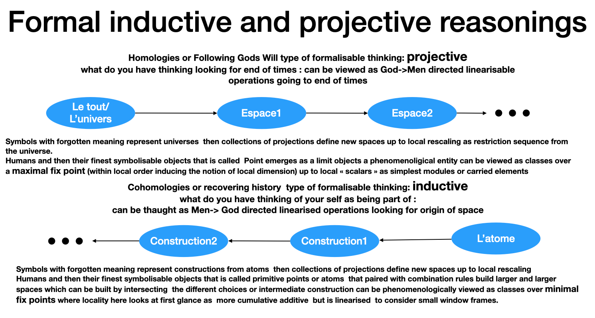

This work starts from a reflexive question: what does it mean to understand, when understanding itself becomes symbolizable?
Rather than treating formal objects as given a priori, it proposes to view them as stabilizations emerging from human practices, historically situated and always open to revision.
The central notion is that of community: not as a collection of elements, but as a process of construction, interpretation, conciliation, and synchronization.
Identity is not primitive but processual and interruptible. Stabilization occurs through forms of consensus that reinforce belief in being while decreasing assurance in non-being, without ever imposing an absolute decision.
Understanding and context
Understanding may require more dimensions than expression allows. What can be observed may be simpler than what is required to make it observable.
Community and meaning
Meaning does not belong to isolated symbols, but emerges from communities capable of conciliation, stabilization, and revision. Symbols do not carry meaning on their own; they acquire it through shared practices and through the possibility of translation across perspectives.
Revisiting the question: what is philosophy?
From this perspective, philosophy is no longer defined primarily by its objects, methods, or doctrines, but by its role in making visible the conditions under which understanding can emerge, stabilize, and be shared.
Philosophy does not stand outside communities, nor does it legislate meaning from above. It operates within communities, reflecting on their implicit agreements, their modes of synchronization, and the limits of their stabilizations.
In this sense, philosophy is neither foundational nor merely descriptive. It is an activity of re-positioning: an exploration of how different points of view can be held together without being reduced to a single perspective.
Proximities and shifts
This approach resonates with phenomenological concerns, such as the attention paid to lived experience and to the conditions of appearance. Yet it departs from classical phenomenology by refusing to privilege a single transcendental standpoint. The center of sense is not fixed; it is always relative to a community and to its ongoing processes of stabilization.
It also echoes insights associated with ordinary language philosophy, in which meaning is inseparable from use. However, use is not treated here as a static social fact, but as a dynamic process involving belief, assurance, interruption, and repair. Language-games themselves are seen as synchronizations that may succeed, fail, or partially persist.
Rather than choosing between these traditions, the present work treats them as different rigidifications of a more general phenomenon: the emergence of sense through communal coordination.
Consensus, repetition, and scale
The need for repetition and change of scale in the emergence of consensus is not merely philosophical. In distributed computational settings, consensus may only emerge when multiple copies of a code are coordinated through ordered message passing.
No single instance carries the consensus; it arises from the structure of interactions and from the sequencing of exchanges. This illustrates a more general point: stabilization does not result from aggregation, but from synchronization.
Repetition, ordering, and partial redundancy are not inefficiencies, but conditions for the emergence of shared meaning within a community.
On statements, history, and community
When a statement is introduced here with a name — for instance, “Adam says that a ten-year-old could rebuild all of mathematics that I know” — this should not be read as an appeal to authority, nor as a claim to be defended.
The reflexive form of the statement is essential. The speaker is not positioned outside the claim, but inside its frame of reference: what is said concerns what is known, and what is known is itself historically situated.
Such a statement is intentionally rigidified: named, attributed, and made reusable. Its role is not to conclude an argument, but to serve as a synchronization object — something around which different reconstructions, interpretations, and expectations can be coordinated.
Evaluating the statement as plausible does not merely assign it a truth value. It contributes to the construction of a space in which certain modes of reasoning, transmission, and reconstruction are recognized, shared, and trusted. In this sense, the statement itself becomes part of the mechanism through which a community forms.
A deconstructing chain: What are the requirements to be an admissible Letter for some continuity
One may observe that they are retranscriptions which recognition is not usually very stringent (exigente) that have teachable by mimic drawing methods that are them selves transmissible. The firs abstract requirement for their use here is that the different gestures that could draw them should have a common interpretation as much as possible. Instead of assuming unicity by quotient of the drawing method, we will use as a requirement the multiplicity of diferent gestures one could imagine to anchor a seed for a community when paired with the anthropomorphism that could telle a story about how she thinks an other anthropomorphism drew a stroke. The narrator synchronises the preparation method (writing) with an observation method (reading)). This somehow will make meaning appears here in an anachronic sentence as a discretely indexable , discretely representable expected approximate guess
as a becomings looks like belief.Why act?
A natural question arises in any constructivist approach: if understanding is relational, revisable, and situated, why act at all?
Acting is not the starting point of this work, but neither is it denied. Action appears here as a transition: a passage from reflective circulation to commitment within a shared situation.
Before acting, one can often remain within a space of construction: comparing perspectives, translating between positions, imagining alternative completions of the same partial structure. This phase is not inactivity; it is a dynamic of orientation, memory, and synchronization.
To act is to interrupt this dynamic. It is to accept a temporary rigidification, to become an agent inside the system rather than an observer of its possible reorganizations. Every action collapses possibilities — and this collapse is sometimes necessary.
From this point of view, action is not a moral imperative nor a foundational axiom. It is a contextual necessity: something that emerges when delay, translation, or revision are no longer viable within a given community or situation.
The question is therefore not why act? in general, but when does acting become the least destructive interruption?